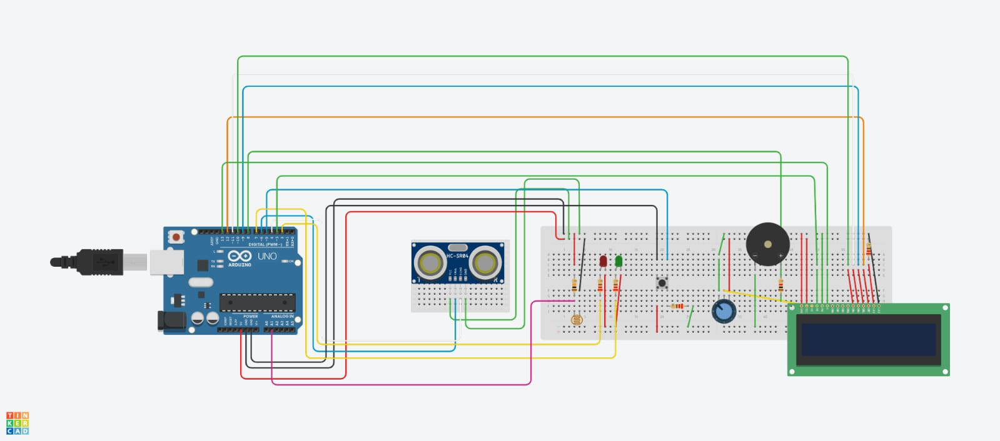
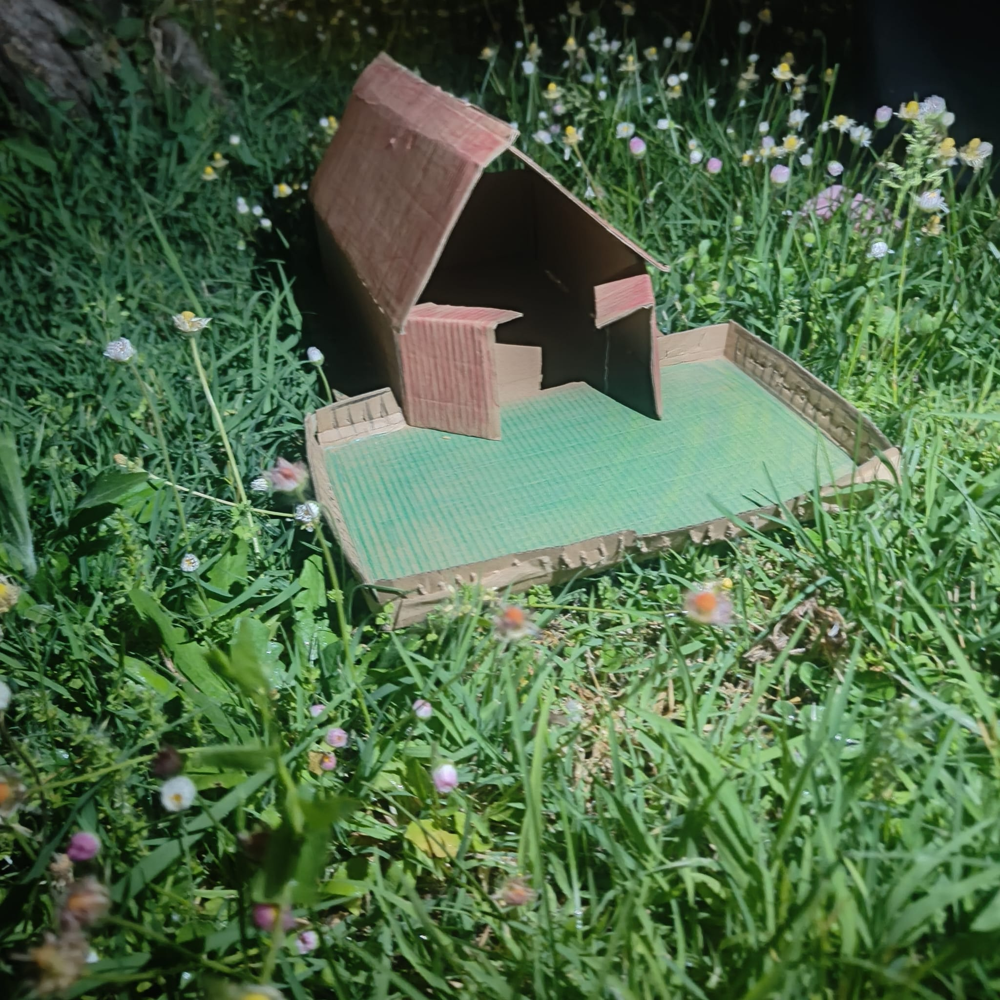
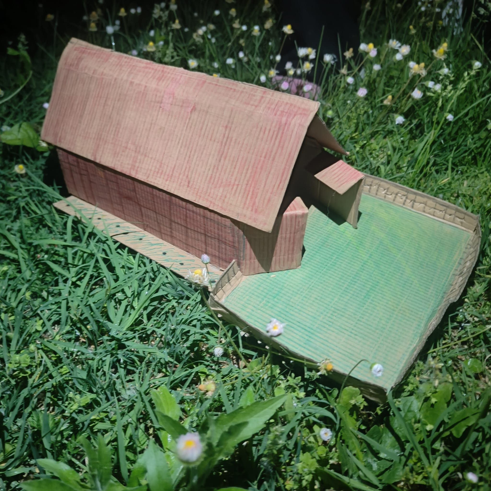
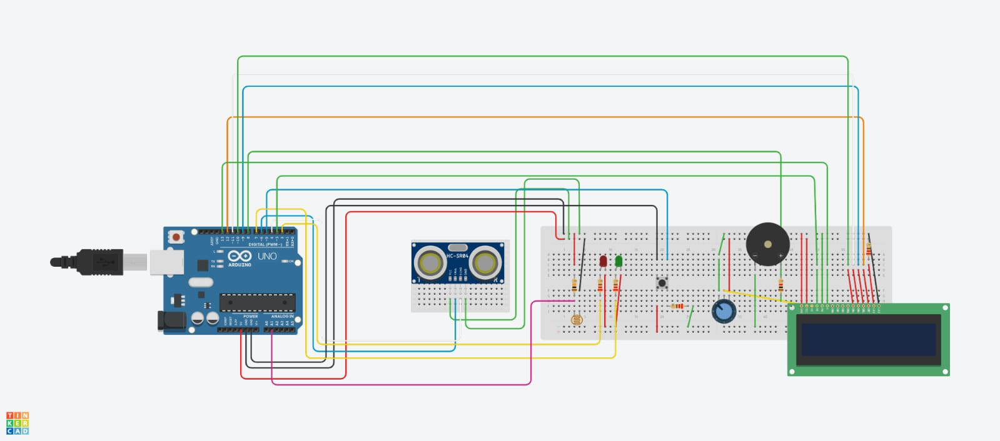
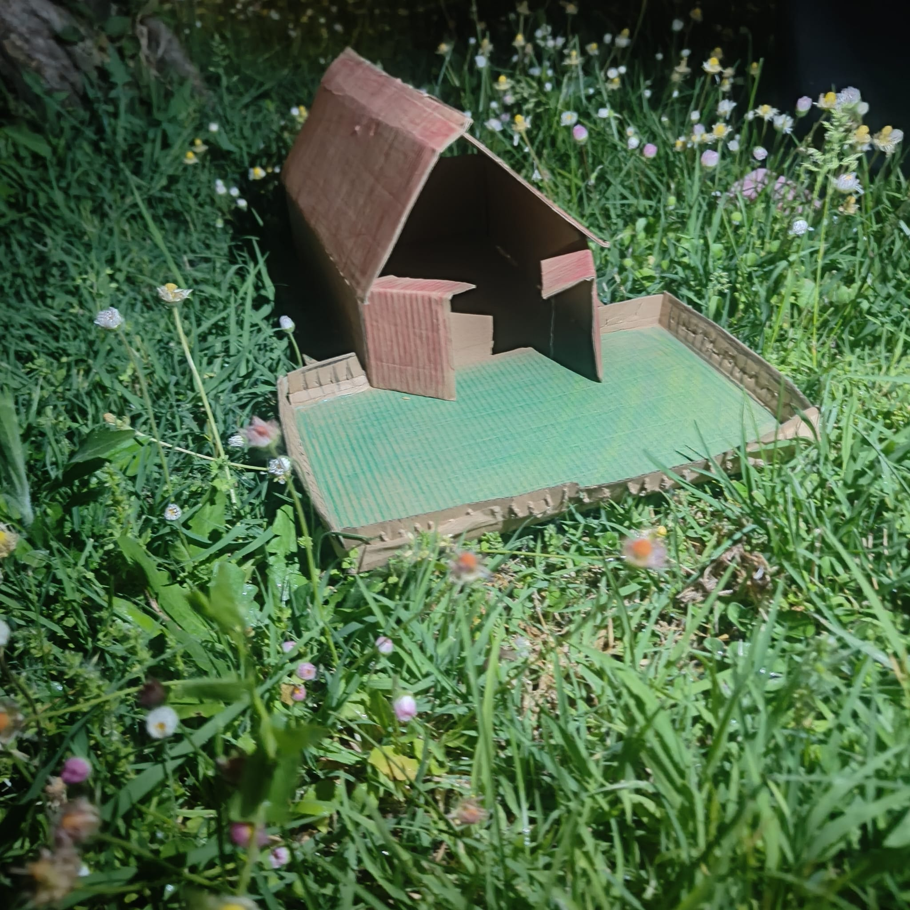
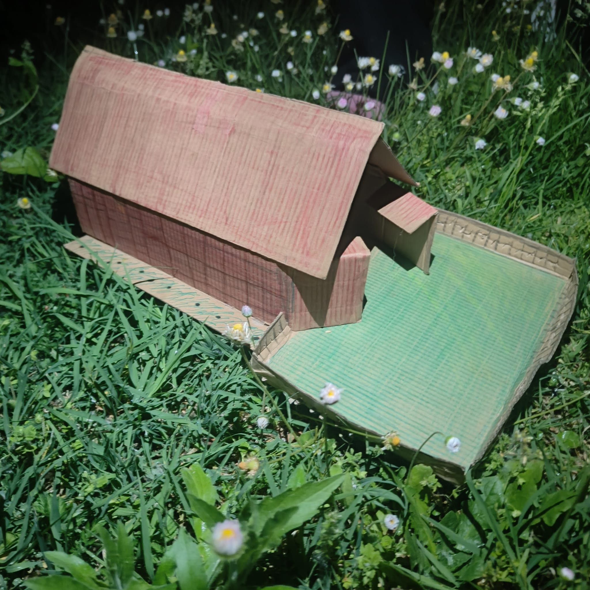

La versione precedente
 





Queste sono alcune foto del circuito finito dell'idea che avevamo prima prima di arrivare alla finale idea e realizazzione attuale invece la casa rappresenta una versione precedente del progetto in legno. Anche in questo caso sono presenti elementi come il giardino e il tetto, ma la struttura generale è differente. I materiali utilizzati sono cartone e carta, colorati a mano con matite per definire gli spazi e i dettagli architettonici.